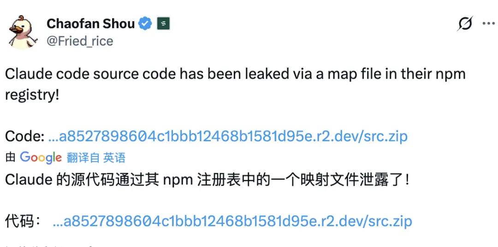
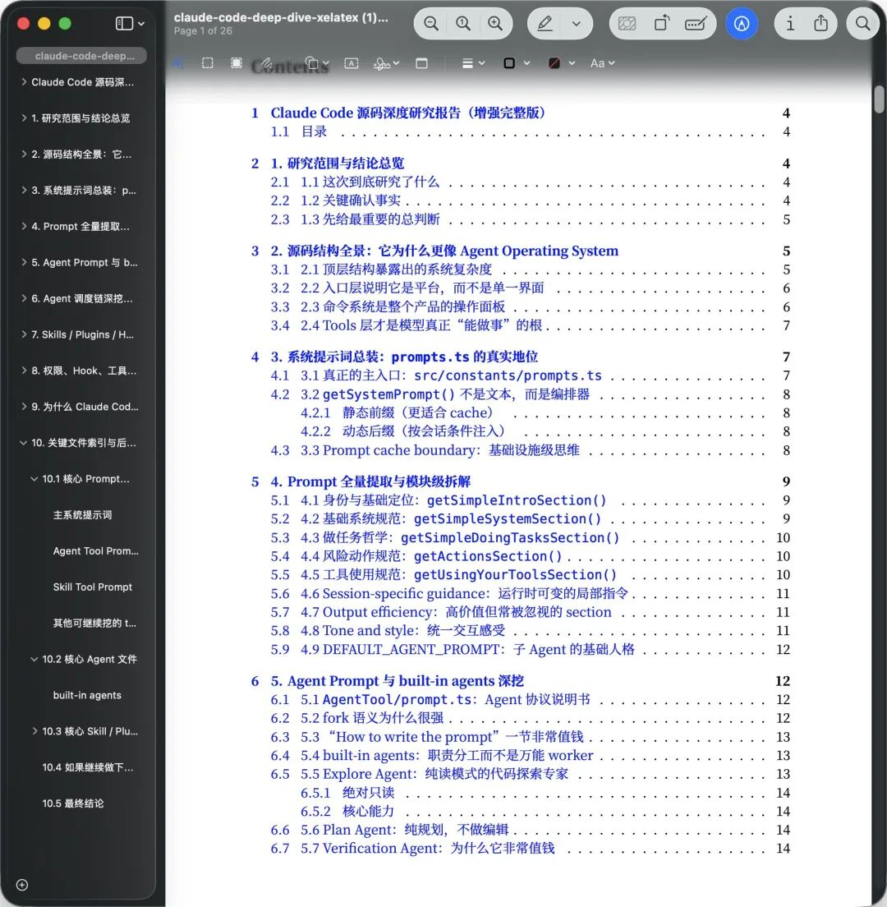

三月底发生了一件挺戏剧性的事。
Anthropic 往 npm 发包的时候，忘了删 .map 文件。就这么一个低级操作，51.2 万行 TypeScript 源码直接全曝光了。半小时内，克隆源码的 GitHub 项目星标冲过 5k，全网疯狂围观。
有意思的是，就在这之前两周，他们刚因为 CMS 配置错误泄露了下一代 Mythos 模型的信息。两周两次，确实有点草台班子的意思。

当然，全网讨论最多的是那些隐藏功能——会在半夜自己整理记忆的 KAIROS 助手，终端里长着赛博宠物的 BUDDY，还有 Undercover 模式（Anthropic 员工给开源项目提 PR 时自动抹掉 AI 痕迹）。
我自己翻完这批代码之后，感受有点不一样。那些隐藏功能固然好玩，但真正有意思的是它的工程架构——它暴露了一件事：AI Agent 能不能上线扛活，门槛在系统工程，不在 Prompt 技巧。
这套东西按平台设计，不是小工具
光看目录结构，就知道野心不小。
入口、任务、工具、调度、记忆、插件、Hook、MCP 全是独立层，边界划得很清楚。40 多个工具模块独立封装，核心推理逻辑 QueryEngine.ts 一个文件就快 5 万行。
很多工具死在扩展的时候。今天只做 CLI 够用，等你要接 IDE、接自动化流程、接团队协作，单体结构会立刻撑不住，整仓库翻修。泄露代码里已经出现了 coordinator（多智能体协调器）和 bridge（连接 VS Code / JetBrains 的桥梁），就是提前把扩展位留好。
还有一个细节：启动阶段就并行做配置和密钥预取，把等待时间提前消化掉。用户感知到的是"它回得快"，背后是毫秒级的预算分配。
Prompt 管理的本质是配置管理
很多文章讲 Prompt 只讲"写什么内容"，很少讲"怎么控成本"。
这套架构里的做法是：把稳定内容和会话内容拆开，固定边界，让前缀缓存尽量命中。缓存命中率一旦上去，延迟和成本同时下降，高频场景才跑得起来，不会被 token 账单拖死。
有个坑特别隐蔽：字段顺序变化就能打穿缓存，成本可以在一周内飙好几倍。你不会收到任何报错，就是账单突然变大，然后才开始找原因。
改动有无日志，边界有无约束，命中率有无持续观测——这些事情没做，Prompt 写得再漂亮也没用。
工具调用的治理链，六级权限验证
这是整套架构里最被低估的部分。
Agent 危险的地方在于它有执行力——能跑命令、改文件、调外部服务。泄露源码里有一套六级权限验证系统，每一次工具调用，无论是执行 Shell 还是读写文件，都得先过这套验证。
完整的链路至少要有四层：输入校验、权限决策、风险预判、失败补偿。再往上加执行前后的 Hook 和审计追踪，才算有资格讲"可控自动化"。
见过这种情况——模型改了一个不该改的配置，服务没挂，但指标全乱了，后面花两天回溯。问题就在没有留痕：不知道它改了什么、什么时候改的、为什么改。治理链平时看起来多了几步，出事时是唯一能救命的东西。
新模型接入的工程代价，源码注释里写着
泄露源码里有一块让我反复看的内容，是关于新模型接入的工程代价。
换模型不是改个参数名这么简单。实操里最麻烦的是行为边界变化：
空工具结果触发假结束 tool_reference在尾部诱发异常停止 模型回退时签名块不兼容 false claim rate 静默升高
这类问题的特征是：模型没坏，系统也没坏，组合在一起会坏。单看任何一层都正常，问题藏在层与层之间。源码注释里工程师自己坦诚写着这些代价，能看出来都是真实踩过的坑。
每次模型更新都需要灰度和回滚开关，不然上线就是在抽奖。这件事不是有条件再做，是必须在前面设计好的。
多 Agent 的正确顺序：先隔离，再并发
泄露代码里有 Coordinator Mode，能让主 Claude 实例调度多个并行子 Agent。
很多团队一上来就追并发，结果主对话被试错垃圾塞满，越跑越偏。
正确顺序是先做隔离。探索、实现、验证三个角色分开，在不同上下文里运行。只读探索角色最关键——只找证据、做归纳，不允许写入，把大量无效路径挡在外面，不污染主流程。主线程只接结论，上下文才能保持干净。
隔离做完，再叠缓存复用，子任务开得再多，成本才不会无上限膨胀。这个顺序反了，之后很难补救。
每周过一遍的检查单
把以上内容压成 6 条，做 Agent 项目时定期核对：
Prompt 是否有稳定边界，缓存命中率是否可观测 工具执行是否全链路留痕，失败后能否快速回溯 高风险动作是否统一经过权限层，不允许直通执行 探索 / 实现 / 验证是否角色分离，验证结论是否独立产出 新模型上线是否有灰度和回滚开关，异常能否分钟级止损 上下文是否有压缩策略，长任务会话是否仍然清晰
拿这 6 条去看任何 Agent 产品，很快能判断它是"看起来聪明"，还是"真能上线扛活"
最后把资料放这。这次源码泄露之后，博主 XiaoTan 在 X 上整理了一份《ClaudeCode 源码深度研究报告（增强完整版）》，比大多数分析文章要系统得多。

下载链接：
[https://github.com/tvytlx/ai-agent-deep-dive/raw/main/ai-agent-deep-dive-v2.pdf\](https://github.com/tvytlx/ai-agent-deep-dive/raw/main/ai-agent-deep-dive-v2.pdf)
如果你在公众号里看这篇，也可以直接回复：claude code，拿同一个 PDF。
⭐以上，既然看到这里了，如果觉得不错，随手点个赞、在看、转发三连吧，谢谢你看我的文章，我们下次再见。